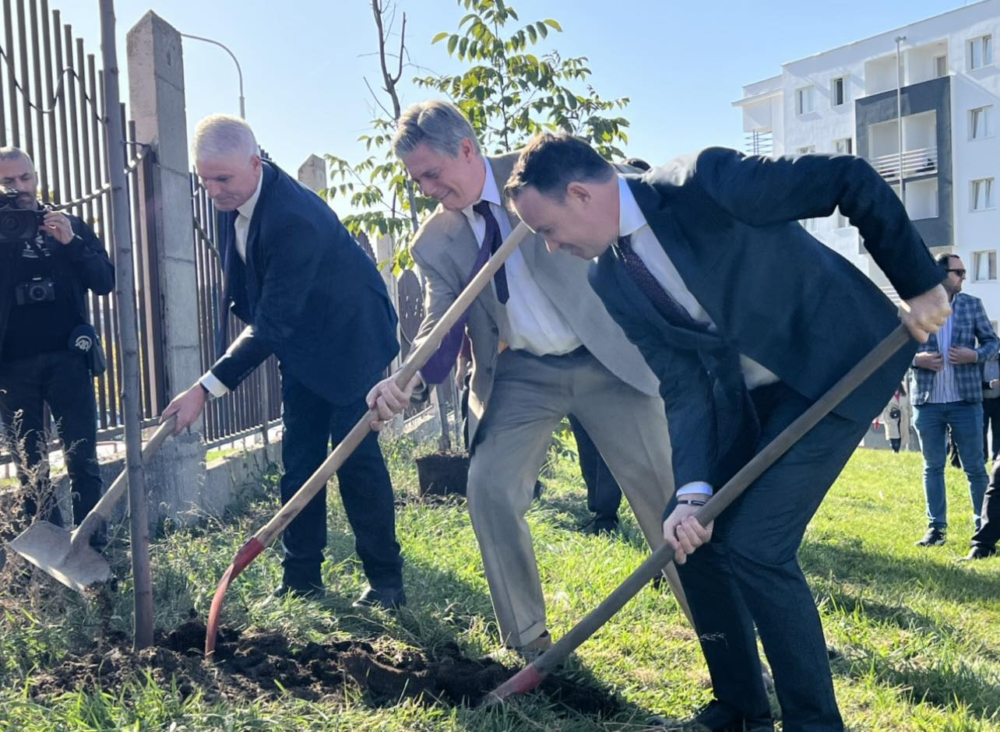
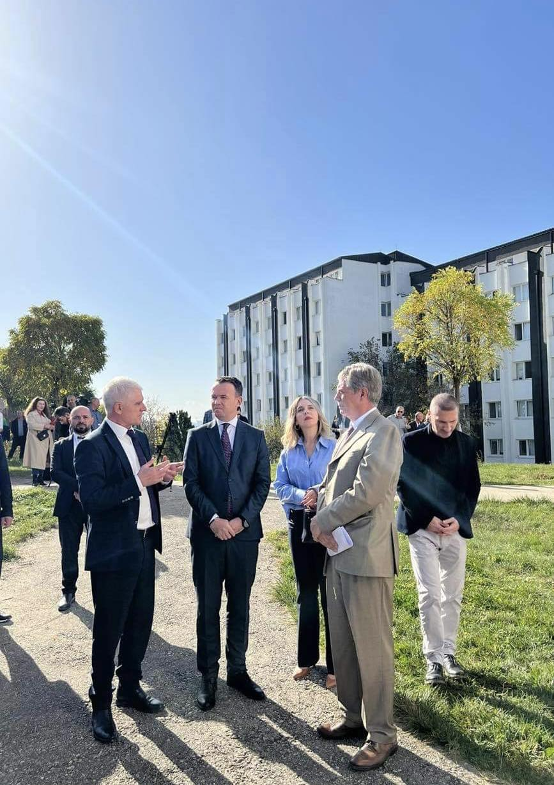

Njoftim
Njoftohen studentët të cilët janë në listën e pritjes se në linkun e mëposhtëm mund të gjejnë emrat e tyre.
Studentët në listë do të vendosen në konvikte me datat 15 dhe 16 Dhjetor 2022.
RIKTHEHEN SHËRBIMET MJEKËSORE NË QENDRËN E STUDENTËVE
Mirëpresim lajmin e funksionalizimit të Qendrës së Mjekësisë Familjare e cila ndodhet prapa mensës së studentëve në Prishtinë.
Personeli shëndetësor me angazhimin e tyre do të ju shërbejë mbi 4000 studentëve që janë të vendosur në Qendrën e Studentëve dhe jo vetëm.
Shëndeti para së gjithash, prandaj urime për të gjithë.
Njoftohen studentët banues në konvikte se afati i pagesave për strehim dhe ushqim për muajin dhjetor fillon me datën 29.11.2022 deri më 07.12.2022. Fletëpagesat shkarkohen online në linkun e mëposhtem në faqet zyrtare të QS-së dhe duhet të dorëzohen tek zyrtarët në konviktet përkatëse brenda ditës. Studentët banues të cilët nuk e bëjnë pagesën në kohën e caktuar, humbin të drejtën e qëndrimit në konvikt.
Sot në Kampusin e Qendrës së Studentëve janë mbjellur 40 drunj nga misioni i Bashkimit Evropian i Eulexit në Kosovë. Në këtë aktivitet morën pjesë Drejtori i Qendrës së Studentëve, Fatmir Sfishta, Kryesuesi i Misionit të Eulexit, Lars Gunnar Wigemark dhe Ministri i Bujqësisë, Pylltarisë dhe Zhvillimit Rural,Faton Peci. Drejtori Fatmir Sfishta falënderoj pjesëmarrësit dhe u zotua se do të mirëmbahen drunjët e mbjellur. Kryesuesi i Eulexit Wigemark tha se qëllimi i këtij aktiviteti nuk është vetëm mbjellja e drunjve por edhe zvogëlimi i karbonit dhe gjurmëve të tij. Ai pati një mesazh për qytetarët të cilët jetojnë në disaporë, tha që nësë prej tyre, secili do të mbillte nga një dru qëllimi do të arrihet shumë më shpejtë. Ndërsa Ministri i Bujqësisë, Faton Peci tha se mbjelljen e 1 milion fidanëve do ta përmbyllim deri në fund të vitit. Ai tha se mbjellja e këtyre drunjëve në këtë kampus ka simbolikën në përmirësimin e gjendjes së ambientit dhe zvoglimin e emetimit të dioksidit të karbonit.
 Njoftohen student banues në konvikte se Misioni i Bashkimit Evropian i Eulexit në Kosovë, në vazhdën e disa projekteve të tyre për mbjelljen e drunjëve nëpër lokacione të ndryshme, kanë përzgjedhur edhe Kampusin e Qendrës së Studentëve si njërën prej lokacioneve për mbjellje të disa fidaneve. Andaj ftoheni të merrni pjesë në këtë aktivitet. Aktiviteti mbahet ditën e mërkure më 02.11.2022 nga ora 11:00 -12:00 në Kampusin e Qendrës së Studentëve.
Të dashur studentë banues në konvikte ju ftojmë të merrni pjesë në ligjëratën që mbahet me 26 tetor 2022, nga ora 18:00 tek salla e konferencave në objektin e drejtorisë të QS-së. Kjo ligjëratë ka për qëllim vetëdijesimin mbi sëmundjen e kancerit të gjirit, dhe rëndësinë e zbulimit të hershëm.
Pjesë e këtij ligjërimi do të jenë:
Dr.Izet Sadiku- Drejtor i Shëndetësisë në komunën e Prishtinës,
Fitore Zenelaj- E mbijetuar e kancerit të gjirit
Nexhmie Beshiri- Psikologe/Trajnere
Ju mirëpresim!
Zbulimi i hershëm shpëton jetë!